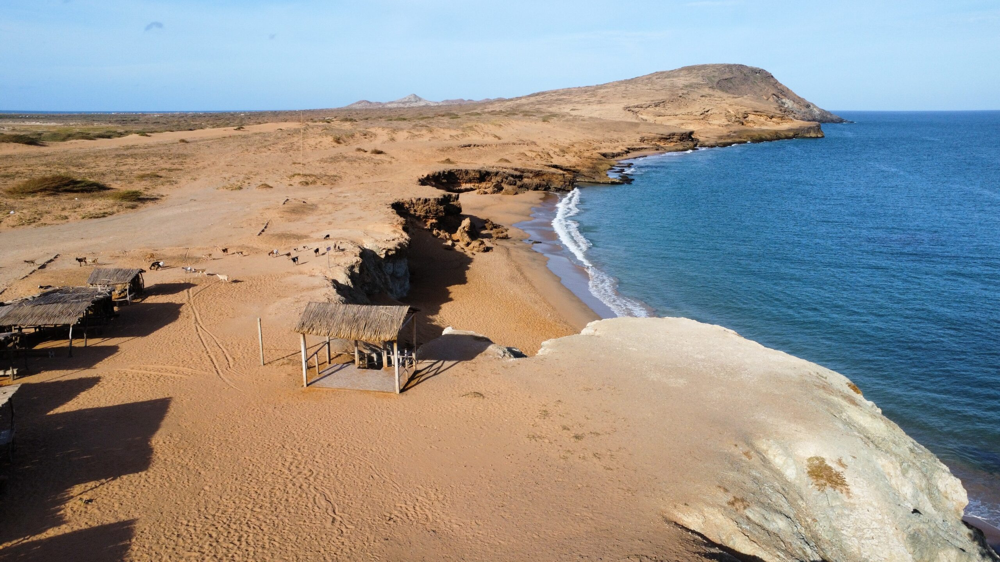
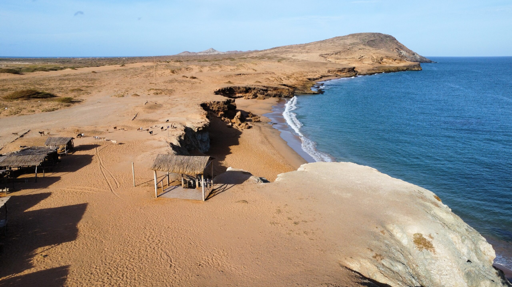

Travel Tips
Ciudad Perdida: You must bring enough water for the hike, as the trail can be challenging and the weather is often hot. You should wear comfortable shoes, since the terrain can be rugged and steep, making the walk even more demanding. You can explore the ruins with a guide to learn about the ancient Tayrona civilization and its history. If you want to make your experience even better, you could plan your visit during the dry season to avoid heavy rains, which can make the hike more difficult and less enjoyable.
Cabo de la Vela: You must try the local Wayuu cuisine, especially the fresh fish dishes, to experience the authentic flavors of the region. You should visit the Pilón de Azúcar to get a panoramic view of the coastline and enjoy an unforgettable sunset. If you enjoy adventure, you can participate in water sports like kitesurfing or windsurfing, which are popular in the area. You could also camp under the stars for a unique experience in the desert environment, surrounded by the beauty of nature.
Home